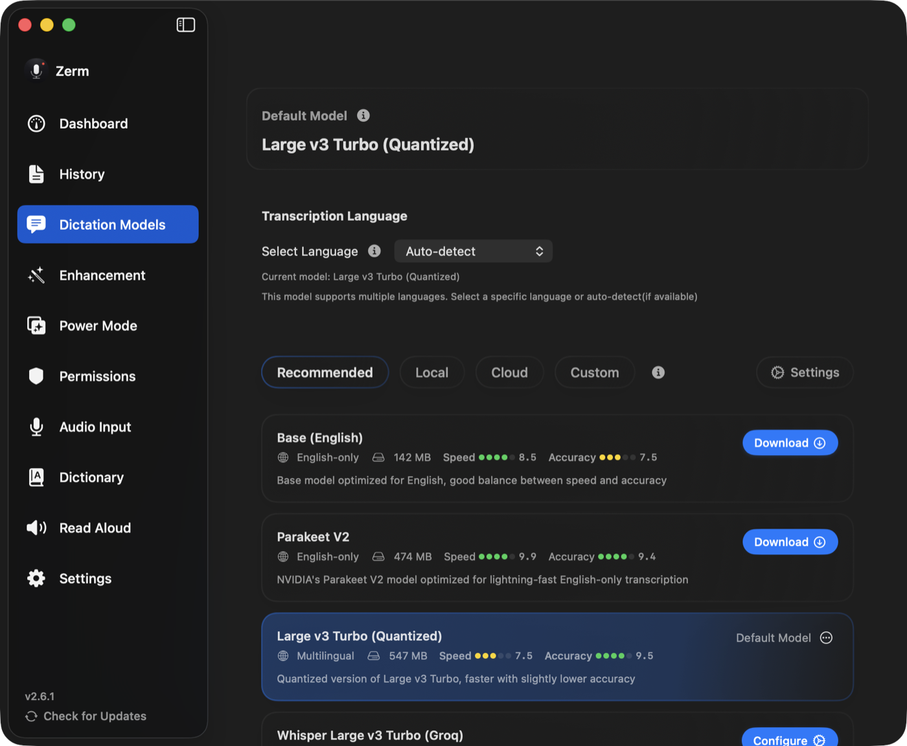

Getting started
Dictation
Press a key, talk, and the text lands at your cursor — plus everything that happens in between.
Dictation is the core loop: hold a shortcut, speak, release, and clean text appears
wherever your cursor already was. It works in every app, because Zerm inserts text the
same way you would paste it rather than integrating with anything.

The loop
- Start. Press your dictation shortcut. The recorder appears and Zerm starts
capturing from your chosen microphone. - Speak. Transcription runs while you talk. On a local model this is entirely on
your Mac. - Stop. Release the key, press it again, or say nothing for a couple of seconds and
let auto-stop end it. - Insert. The text is pasted at your cursor.
Press Escape at any point before insertion and the recording is discarded. Nothing is
written and nothing is saved to history.
Trigger styles
Each shortcut has a mode that decides what pressing it means:
- Push to talk — record while held, stop on release. The most predictable, and the
best default for short dictation. - Toggle — press to start, press again to stop. Better for anything long, since you
are not holding a key for two minutes. - Hybrid — a quick tap toggles; holding the key past half a second becomes push to
talk. You get both without deciding in advance.
You can configure two independent dictation shortcuts, each with its own mode, so push
to talk and toggle can live on different keys. See shortcuts for the
full list.
Auto-stop on silence
Auto-stop is on by default. When Zerm hears nothing above the level threshold for long
enough, it ends the recording for you.
- Silence before stopping — 2.5 seconds by default. This was raised from a much
shorter value because a normal thinking pause in long-form dictation was tripping it
and cutting people off mid-sentence. - Initial silence — 6 seconds. If you never start speaking, the recording gives up
rather than sitting open. - Minimum recording length — 0.8 seconds, so a mis-press does not immediately
produce an empty transcript.
Auto-stop applies to toggle-style recordings. In push to talk you are already holding
the key, so releasing it is the stop.
The recorder
Two styles, chosen in Settings:
- Mini — a small floating pill you can position where you like.
- Notch — anchored to the notch on Macs that have one, out of the way of everything
else.
Both show the level meter, the elapsed time, the active Power Mode,
and the enhancement state. Both offer the same shortcuts while visible.
Insertion
Text is placed on the clipboard and pasted with a synthetic ⌘V at the current insertion
point. That needs Accessibility permission; without it Zerm can copy but not paste. See
permissions.
Restore clipboard after paste is off by default. Turn it on and Zerm puts your
previous clipboard contents back a couple of seconds after pasting — worth it if you
rely on your clipboard, at the cost of a small window where the two can race.
While it holds the clipboard, Zerm marks the entry as transient and auto-generated, so
well-behaved clipboard managers do not record your transcripts in their history.
AppleScript paste is an alternative insertion path for the rare app where the
synthetic keystroke does not land.
Append trailing space is on by default, so consecutive dictations do not run
together.
What happens to the text before you see it
In order, and all locally:
- Formatting from the transcription model is normalised.
- Filler words are removed, if enabled.
- Your dictionary replacements are applied.
- Per-mode punctuation and lowercase rules are applied.
- The result is inserted — and, depending on your
output mode, may then be improved by a language model.
The shipped default is Instant + Refine: the raw transcript lands immediately, and
the model may then rewrite it in place in apps that allow a direct edit. In Cursor,
Slack, VS Code, and browsers the raw text stays; the cleaned version is kept in
History.
Language
The language setting is what the speech model is allowed to hear.
- Pin a language when you will speak that language. English in a code editor,
Hebrew in a Hebrew chat. - Auto is for recordings where you actually switch languages.
- Do not pin Hebrew if you are about to speak English or Russian. Whisper will try
to hear Hebrew and the transcript will be wrong.
A Hebrew keyboard can still recover a short Hebrew phrase that Auto first guessed as
English. Having Hebrew as a macOS preferred language, or using the Hebrew UI, is not
enough to force that pass.
Enhancement never translates. Mixed sentences stay mixed. See
AI enhancement.
While recording
- Pause media — playing audio is paused when recording starts and resumed
afterwards, with a configurable delay. Off by default. - Mute system audio — on by default, so system sounds do not end up in the
recording. - Sound feedback — a short cue on start and stop. On by default, and the sounds are
replaceable.
Audio files
Dictation is not the only input. Drop an existing recording or voice memo into Zerm and
it runs through the same pipeline, with the same models and the same post-processing.